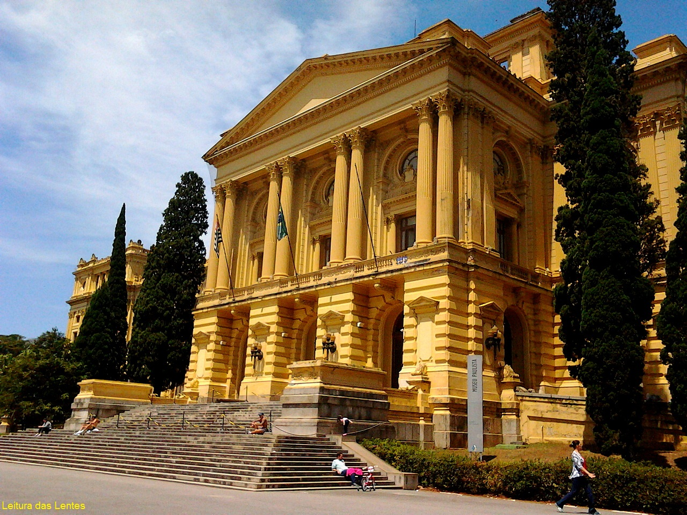
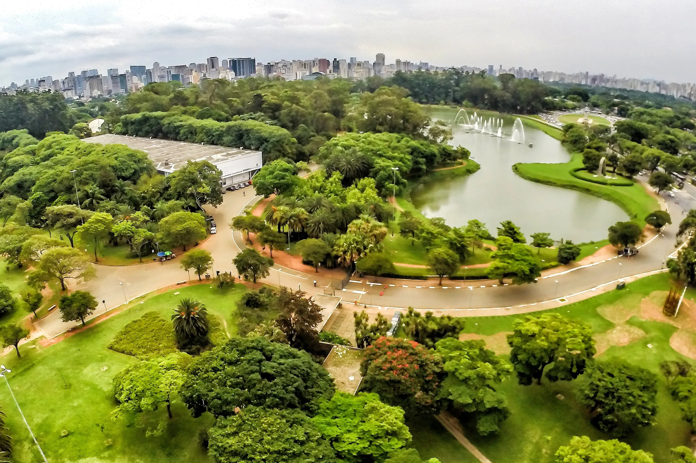

Pontos Turisticos - São Paulo.
MASP - MUSEU DE ARTE DE SÃO PAULO

O MASP (Museu de Arte de São Paulo) é um ícone da cena cultural brasileira, localizado na Avenida Paulista, em São Paulo. Reconhecido por sua arquitetura modernista e sua impressionante coleção de arte,
o Museu abriga obras de artistas renomados, tanto nacionais quanto internacionais.
Seu acervo diversificado inclui pinturas, esculturas, fotografias e outras formas de arte, proporcionando aos visitantes uma experiência enriquecedora e inspiradora.
MUSEU DO IPIRANGA

O Museu do Ipiranga, oficialmente conhecido como Museu Paulista da Universidade de São Paulo (MP/USP), é um marco histórico localizado em São Paulo. Situado no Parque da Independência, o museu é famoso por sua arquitetura imponente e sua importância histórica como símbolo da Independência do Brasil.
O acervo do Museu do Ipiranga abrange uma vasta coleção de artefatos, documentos e obras de arte relacionadas à história do Brasil, desde o período colonial até os tempos modernos. Os visitantes podem explorar exposições permanentes e temporárias, que oferecem uma visão fascinante da cultura, política e sociedade brasileira ao longo dos séculos.
Além das exposições, o Museu do Ipiranga oferece atividades educativas, eventos culturais e programas especiais para o público de todas as idades, tornando-o um destino essencial para quem deseja compreender melhor a história e a cultura do Brasil.
Parque ibirapuera

O Parque Ibirapuera é um dos principais pontos de interesse em São Paulo, conhecido por sua vasta área verde e suas diversas atrações culturais e recreativas. Localizado no coração da cidade, o parque oferece uma variedade de atividades para os visitantes, incluindo caminhadas, corridas, piqueniques e muito mais.
Além disso, o Parque Ibirapuera abriga várias instalações culturais importantes, como o Museu de Arte Moderna (MAM), o Museu Afro Brasil e o Auditório Ibirapuera, projetado pelo renomado arquiteto Oscar Niemeyer. Os visitantes também podem desfrutar de espaços ao ar livre dedicados à prática de esportes, como quadras de tênis, campos de futebol e pistas de skate.
Com sua atmosfera vibrante e suas inúmeras opções de lazer, o Parque Ibirapuera é um destino popular para moradores locais e turistas, proporcionando um refúgio tranquilo no meio da agitação da cidade.